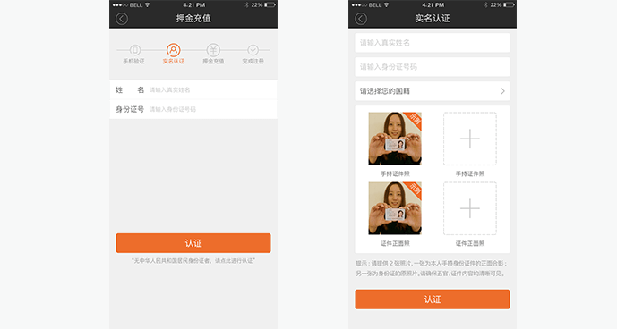

如果您登录时迟迟收不到短信验证码，可按如下方式：
1.检查您是否安装了短信拦截软件（如360、手机管家等），如有安装，可放行来自JOYBIKE公司的短信或暂时删除拦截软件，再次登录发送验证码即可。
2.如若未安装拦截软件，请联系在线客服或拨打客服电话进行解决。
1.请您用简体中文输入您的姓名以及身份证号码，如果多次尝试仍然不通过，请点击页面下方的“没有中国身份证或多次实名认证失败”，进入人工审核页面。
2.请填写姓名，证件号码及国籍（确保填写的信息与证件信息一致），并上传两张照片。
3.一张为本人手持身份证件的正面合影，另一张为身份证件的原件照。请确保五官，证件内容页清晰可见。